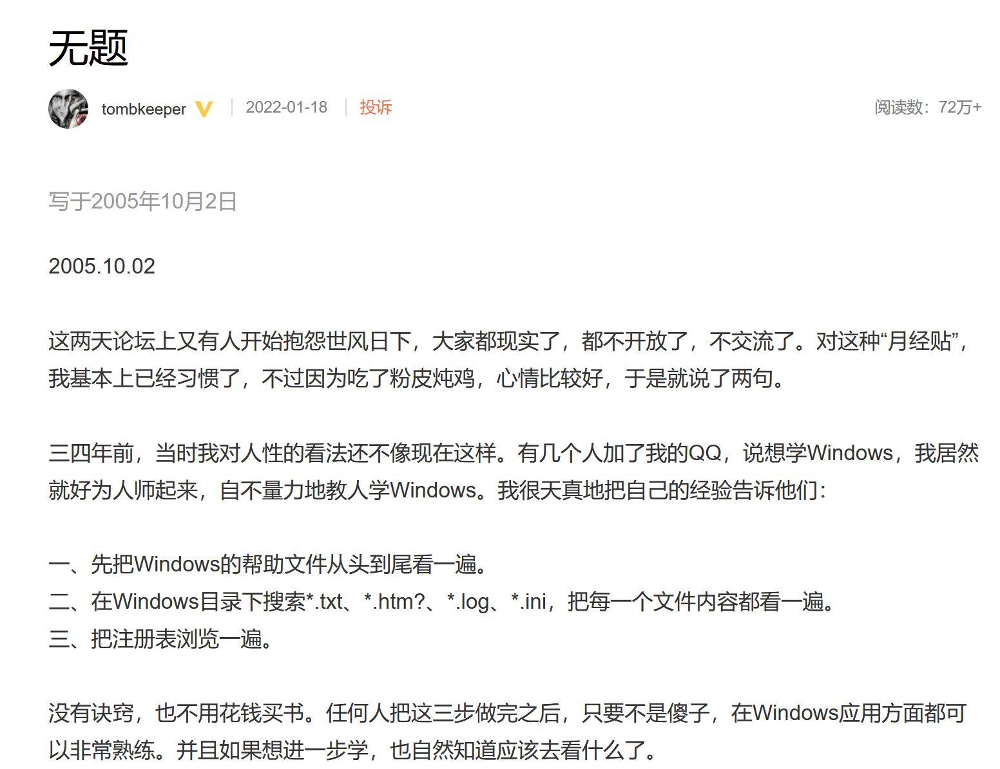
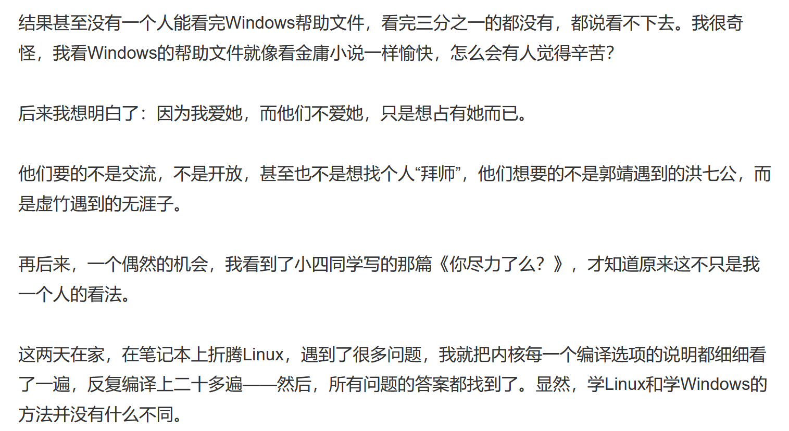
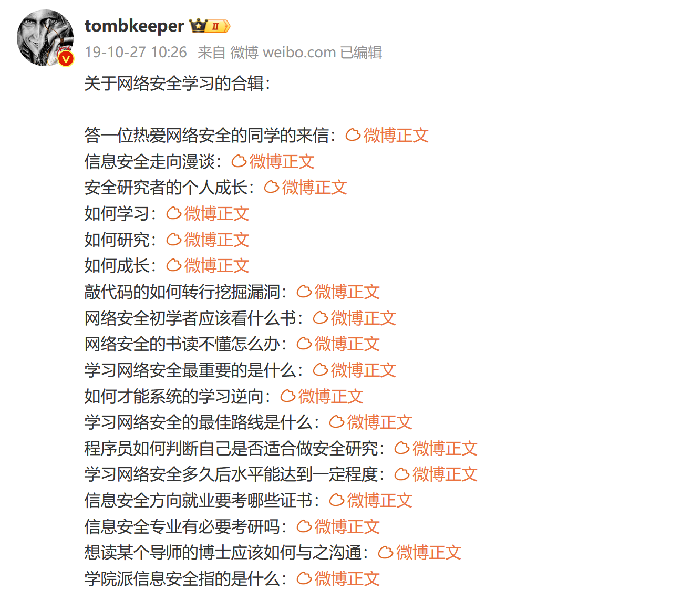

221111
不废话，直接看，反复看
TK教主之
- 文档遍历法


技术会过时，学习方法永不过时。
SITE：https://www.tombkeeper.io/

余弦团队
SITE:https://evilpan.com/
消失的德勒安全
SITE:https://raven-medicine.com/
绿盟漏洞情报
SITE:http://www.nsfocus.net/index.php?act=sec_bug
看完了么？看了几遍？看进脑子里了么？实践过么？
2023-3-31：记当下心情：一样东西振奋你魂魄！搅动你血液！飱食你意志！让你知蒙昧与轻狂！让你整日成疯成颠！这人竟然还有一副鲜活的肉体！